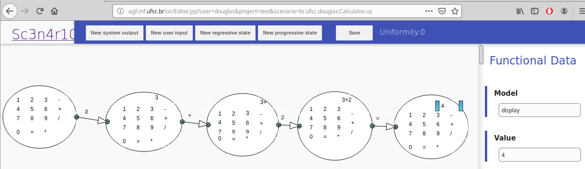

Documentation
Overview
The User Scenario through User Interaction Diagrams (US-UIDs) are a format of automated acceptance tests. They are created by Web browser and executed by Eclipse Plug-in. The Figure 1 shows the framework architecture.

Figure 1. Framework architecture.
The framework is composed by:
- Web editor - it is used by client/user to create US-UIDs;
- Eclipse plug-in - it is user by developers to tests automation
Web editor
At http://agil.inf.ufsc.br/us is possible create an user account. After the user is created, it is possible to create projects and, in each project, create the US-UIDs. The Figure 2 shows the editor of US-UIDs.

Figure 2. Sc3n4r10 editor.
Figure 2. Sc3n4r10 editor.
Eclipse plug-in
Installation
- Menu: Eclipse -> Help -> Install New Software
- Add Repository
-
- Name: Scenario
- Location: http://agil.inf.ufsc.br/us/site-plugin/site.xml